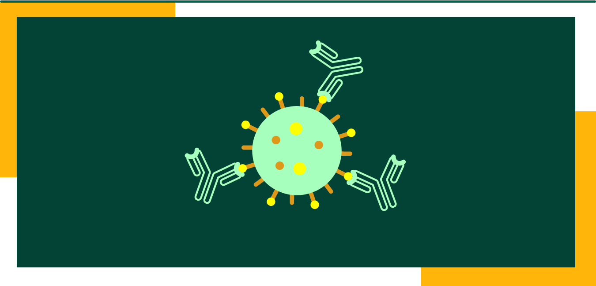

Engineering Success
Overview
Os testes sorológicos são capazes de detectar os anticorpos produzidos por células de defesa após a infecção do vírus no organismo, principalmente as imunoglobulinas do tipo G (IgG) e M (IgM). Mas para vírus semelhantes como Dengue e Zika, a inespecificidade deste tipo de teste ocorre por causa de um fenômeno denominado reação cruzada (MONTECILLO-A. et al, 2019).Os testes sorológicos são capazes de detectar os anticorpos produzidos por células de defesa após a infecção do vírus no organismo, principalmente as imunoglobulinas do tipo G (IgG) e M (IgM). Mas para vírus semelhantes como Dengue e Zika, a inespecificidade deste tipo de teste ocorre por causa de um fenômeno denominado reação cruzada (MONTECILLO-A. et al, 2019).
Os testes sorológicos são capazes de detectar os anticorpos produzidos por células de defesa após a infecção do vírus no organismo, principalmente as imunoglobulinas do tipo G (IgG) e M (IgM). Mas para vírus semelhantes como Dengue e Zika, a inespecificidade deste tipo de teste ocorre por causa de um fenômeno denominado reação cruzada (MONTECILLO-A. et al, 2019).  Os testes sorológicos são capazes de detectar os anticorpos produzidos por células de defesa após a infecção do vírus no organismo, principalmente as imunoglobulinas do tipo G (IgG) e M (IgM). Mas para vírus semelhantes como Dengue e Zika, a inespecificidade deste tipo de teste ocorre por causa de um fenômeno denominado reação cruzada (MONTECILLO-A. et al, 2019).
Os testes sorológicos são capazes de detectar os anticorpos produzidos por células de defesa após a infecção do vírus no organismo, principalmente as imunoglobulinas do tipo G (IgG) e M (IgM). Mas para vírus semelhantes como Dengue e Zika, a inespecificidade deste tipo de teste ocorre por causa de um fenômeno denominado reação cruzada (MONTECILLO-A. et al, 2019).
Os testes sorológicos são capazes de detectar os anticorpos produzidos por células de defesa após a infecção do vírus no organismo, principalmente as imunoglobulinas do tipo G (IgG) e M (IgM). Mas para vírus semelhantes como Dengue e Zika, a inespecificidade deste tipo de teste ocorre por causa de um fenômeno denominado reação cruzada (MONTECILLO-A. et al, 2019).
Os testes sorológicos são capazes de detectar os anticorpos produzidos por células de defesa após a infecção do vírus no organismo, principalmente as imunoglobulinas do tipo G (IgG) e M (IgM). Mas para vírus semelhantes como Dengue e Zika, a inespecificidade deste tipo de teste ocorre por causa de um fenômeno denominado reação cruzada (MONTECILLO-A. et al, 2019).

Estes erros de diagnósticos podem trazer consequências graves, uma vez que dificultam o tratamento direcionado ao paciente em questão e um melhor controle epidemiológico da doença (Muller, D. A., Depelsenaire, A. C. I., & Young, P. R. 2017).
Estes erros de diagnósticos podem trazer consequências graves, uma vez que dificultam o tratamento direcionado ao paciente em questão e um melhor controle epidemiológico da doença (Muller, D. A., Depelsenaire, A. C. I., & Young, P. R. 2017).
Estes erros de diagnósticos podem trazer consequências graves, uma vez que dificultam o tratamento direcionado ao paciente em questão e um melhor controle epidemiológico da doença (Muller, D. A., Depelsenaire, A. C. I., & Young, P. R. 2017).
Os testes sorológicos são capazes de detectar os anticorpos produzidos por células de defesa após a infecção do vírus no organismo, principalmente as imunoglobulinas do tipo G (IgG) e M (IgM). Mas para vírus semelhantes como Dengue e Zika, a inespecificidade deste tipo de teste ocorre por causa de um fenômeno denominado reação cruzada (MONTECILLO-A. et al, 2019).
Os testes sorológicos são capazes de detectar os anticorpos produzidos por células de defesa após a infecção do vírus no organismo, principalmente as imunoglobulinas do tipo G (IgG) e M (IgM). Mas para vírus semelhantes como Dengue e Zika, a inespecificidade deste tipo de teste ocorre por causa de um fenômeno denominado reação cruzada (MONTECILLO-A. et al, 2019).
Os testes sorológicos são capazes de detectar os anticorpos produzidos por células de defesa após a infecção do vírus no organismo, principalmente as imunoglobulinas do tipo G (IgG) e M (IgM). Mas para vírus semelhantes como Dengue e Zika, a inespecificidade deste tipo de teste ocorre por causa de um fenômeno denominado reação cruzada (MONTECILLO-A. et al, 2019).
What happens in the body after infection
ajsdbajbfj
Os testes sorológicos são capazes de detectar os anticorpos produzidos por células de defesa após a infecção do vírus no organismo, principalmente as imunoglobulinas do tipo G (IgG) e M (IgM). Mas para vírus semelhantes como Dengue e Zika, a inespecificidade deste tipo de teste ocorre por causa de um fenômeno denominado reação cruzada (MONTECILLO-A. et al, 2019).Os testes sorológicos são capazes de detectar os anticorpos produzidos por células de defesa após a infecção do vírus no organismo, principalmente as imunoglobulinas do tipo G (IgG) e M (IgM). Mas para vírus semelhantes como Dengue e Zika, a inespecificidade deste tipo de teste ocorre por causa de um fenômeno denominado reação cruzada (MONTECILLO-A. et al, 2019).
Os testes sorológicos são capazes de detectar os anticorpos produzidos por células de defesa após a infecção do vírus no organismo, principalmente as imunoglobulinas do tipo G (IgG) e M (IgM). Mas para vírus semelhantes como Dengue e Zika, a inespecificidade deste tipo de teste ocorre por causa de um fenômeno denominado reação cruzada (MONTECILLO-A. et al, 2019). Os testes sorológicos são capazes de detectar os anticorpos produzidos por células de defesa após a infecção do vírus no organismo, principalmente as imunoglobulinas do tipo G (IgG) e M (IgM). Mas para vírus semelhantes como Dengue e Zika, a inespecificidade deste tipo de teste ocorre por causa de um fenômeno denominado reação cruzada (MONTECILLO-A. et al, 2019).
Os testes sorológicos são capazes de detectar os anticorpos produzidos por células de defesa após a infecção do vírus no organismo, principalmente as imunoglobulinas do tipo G (IgG) e M (IgM). Mas para vírus semelhantes como Dengue e Zika, a inespecificidade deste tipo de teste ocorre por causa de um fenômeno denominado reação cruzada (MONTECILLO-A. et al, 2019).
Os testes sorológicos são capazes de detectar os anticorpos produzidos por células de defesa após a infecção do vírus no organismo, principalmente as imunoglobulinas do tipo G (IgG) e M (IgM). Mas para vírus semelhantes como Dengue e Zika, a inespecificidade deste tipo de teste ocorre por causa de um fenômeno denominado reação cruzada (MONTECILLO-A. et al, 2019). Os testes sorológicos são capazes de detectar os anticorpos produzidos por células de defesa após a infecção do vírus no organismo, principalmente as imunoglobulinas do tipo G (IgG) e M (IgM). Mas para vírus semelhantes como Dengue e Zika, a inespecificidade deste tipo de teste ocorre por causa de um fenômeno denominado reação cruzada (MONTECILLO-A. et al, 2019).
Os testes sorológicos são capazes de detectar os anticorpos produzidos por células de defesa após a infecção do vírus no organismo, principalmente as imunoglobulinas do tipo G (IgG) e M (IgM). Mas para vírus semelhantes como Dengue e Zika, a inespecificidade deste tipo de teste ocorre por causa de um fenômeno denominado reação cruzada (MONTECILLO-A. et al, 2019).
Os testes sorológicos são capazes de detectar os anticorpos produzidos por células de defesa após a infecção do vírus no organismo, principalmente as imunoglobulinas do tipo G (IgG) e M (IgM). Mas para vírus semelhantes como Dengue e Zika, a inespecificidade deste tipo de teste ocorre por causa de um fenômeno denominado reação cruzada (MONTECILLO-A. et al, 2019).
Table 1 - Epítopos da proteína multi-epítopo
| Epítopo | Proteína | Sequência |
|---|---|---|
| EP1 | envelope | pelrfmwrpm |
| EP2 | envelope | ejkfnwiofn |
| dfg | fdg | fgfd |
| dfgdf | dgfd | dgfgd |
| dfgdf | fdgdg | dfgdg |